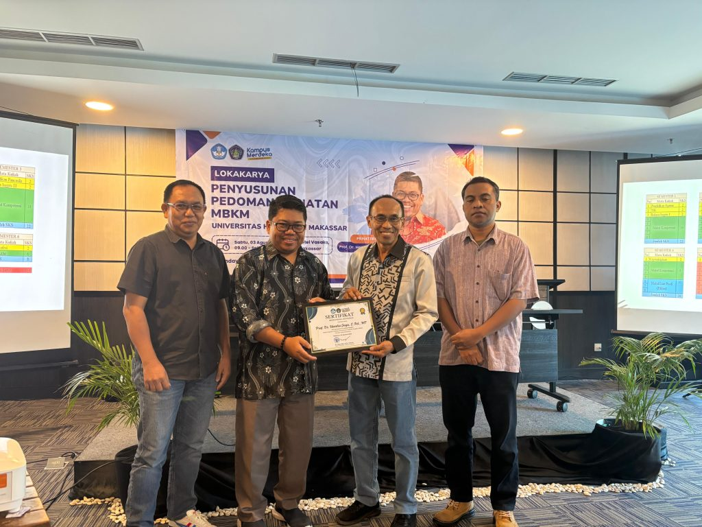
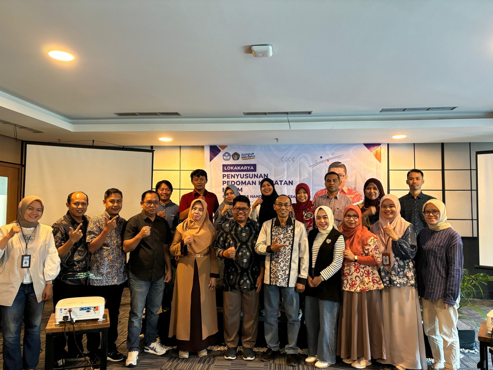

Sabtu, 03 Agustus 2024, bertempat di Vasaka Hotel, Universitas Handayani Makassar menggelar lokakarya penyusunan pedoman kegiatan Merdeka Belajar Kampus Merdeka (MBKM).
Acara dibuka langsung oleh Rektor UHM, Dr. Nasrullah, M.Si., M.Kom, dan dihadiri oleh jajaran pimpinan mulai dari Wakil Rektor, Dekan, hingga Kaprodi Universitas Handayani Makassar.
Kegiatan ini dilanjutkan dengan pemaparan materi dari narasumber utama, Prof. Dr. Hendra Jaya, S.Pd., MT, yang menjelaskan alur umum pelaksanaan MBKM serta strategi redesign kurikulum MBKM di lingkungan UHM.
Dalam sesi dialog dan sharing, para Kaprodi mendapatkan banyak pencerahan mengenai teknis dan pedoman penyusunan program MBKM. "Semoga ke depan penyusunan MBKM, yang terdiri dari 8 bentuk kegiatan pembelajaran (BKP), dapat diselesaikan secara baik dan sesuai kebijakan institusi," tambah Prof. Hendra di sesi penutupan.

Kegiatan ini diikuti oleh jajaran pimpinan UHM serta dosen pengelola dari seluruh program studi Universitas Handayani Makassar. ← Kembali ke Halaman Informasi